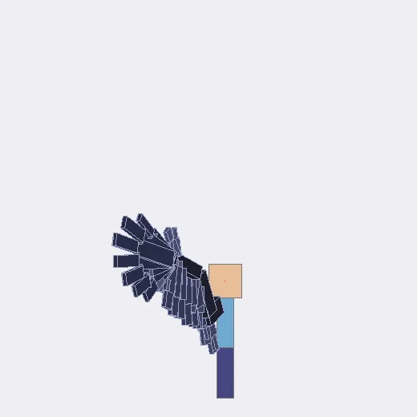
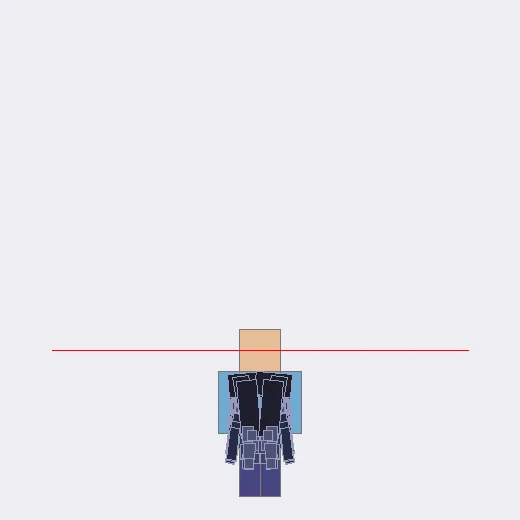

3D model and viewer
An animated angel-wing model inspired by Supernatural (Blockbench .bbmodel) with a 3D viewer in the browser. Fan-made.
A fan-made, unofficial Blockbench model: 150 cubes, 81 bones, 5 animations and a 64x64 texture. The show never displayed the wings in 3D, so the proportions and colours are an interpretation, not based on an official source. The model was prepared for a Paper plugin but was not tried with BetterModel or Geyser. The previews are drawings made from the author's own kinematics, not Blockbench screenshots.
Gallery
Real screenshot



Facts
- 150 cubes, 81 bones, 5 animations, 64x64 texture
- Animations: open (1.3 s), close (1.3 s), idle (5 s), hover (3.2 s), fly (1.6 s)
- Wingspan about 5 blocks (≈ 82 px)
- Proportions and colours are not based on an official source; they are an interpretation
- Not tried with BetterModel or Bedrock/Geyser
- The .bbmodel file was written by script and not opened or tested in Blockbench
- Supernatural and related names belong to their rights holders; no footage from the show is in the repo
- Type
- 3D model and viewer
- Status
- Fan-made and unofficial; the .bbmodel file was not opened and tested in Blockbench
- Technology
- Blockbench .bbmodel, JavaScript (three.js viewer), Python
- Licence
- MIT